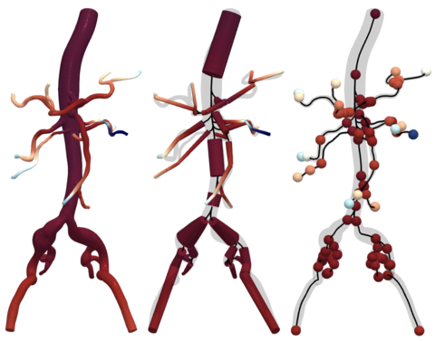

improving ROM parameters and automatizing medical image -> model pipeline

In the realm of blood flow simulation, addressing the computational demands of large-scale computational fluid dynamics (CFD) simulations for complex geometries, such as blood vessels and heart chambers, poses a significant challenge. These simulations can take hours to run even on high-performance computing clusters, adding to the computational burden of geometry construction, boundary condition definition, and material modeling. Reduced Order Modeling (ROM) offers a promising solution to mitigate these computational costs while maintaining a relatively accurate solution, albeit at a lower resolution.
ROM simplifies the computational domain by reducing it to one-dimensional meshes, known as centerlines, or to a system of circuit components analogous to electrical elements (e.g., resistance, capacitance, inductance) in zero-dimensional (0D) ROMs. By employing ROM techniques, the computational power required for solving the governing partial differential equations (PDEs) is significantly reduced, offering the potential for almost real-time patient-specific blood flow simulations.
However, the success of ROM models relies heavily on accurate patient-specific geometric information as input. Currently, the reconstruction of patient-specific geometry from medical images is a time-consuming process, often requiring expertise from medical imaging specialists. This project aims to integrate automatic patient-specific geometric construction methods, developed as part of the researcher’s PhD work, with ROM modeling setups to achieve nearly real-time blood flow simulation results.
Upon completion of these steps, the ROM simulations can be conducted using the reduced-order model, leveraging the patient-specific geometric information generated by the automatic reconstruction process. This integration of automatic geometric construction and ROM modeling holds promise for accelerating blood flow simulations, paving the way for efficient and personalized clinical applications.